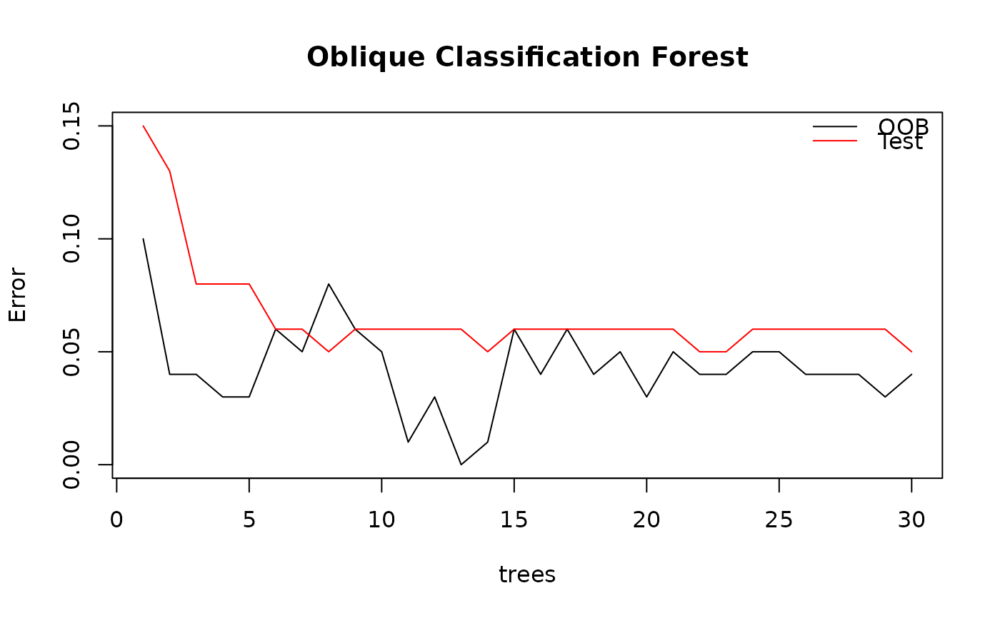

Draw the error graph of class ODRF at different tree sizes.
Usage
# S3 method for class 'Accuracy'
plot(x, lty = 1, digits = NULL, main = NULL, ...)Value
OOB error and test error, misclassification rate (MR) for classification or mean square error (MSE) for regression.
Examples
data(breast_cancer)
set.seed(221212)
train <- sample(1:569, 80)
train_data <- data.frame(breast_cancer[train, -1])
test_data <- data.frame(breast_cancer[-train, -1])
forest <- ODRF(diagnosis ~ ., train_data, split = "gini",
parallel = FALSE, ntrees = 30)
(error <- Accuracy(forest, train_data, test_data))
#> $err.oob
#> [1] 0.09677419 0.04255319 0.03703704 0.03389831 0.02941176 0.05555556
#> [7] 0.05263158 0.07692308 0.06410256 0.05000000 0.01250000 0.02500000
#> [13] 0.00000000 0.01250000 0.06250000 0.03750000 0.06250000 0.03750000
#> [19] 0.05000000 0.02500000 0.05000000 0.03750000 0.03750000 0.05000000
#> [25] 0.05000000 0.03750000 0.03750000 0.03750000 0.02500000 0.03750000
#>
#> $err.test
#> [1] 0.15132924 0.12883436 0.07566462 0.07566462 0.07566462 0.05930470
#> [7] 0.06134969 0.05316973 0.05521472 0.05930470 0.06134969 0.05521472
#> [13] 0.05725971 0.04907975 0.06339468 0.06339468 0.05930470 0.06134969
#> [19] 0.05930470 0.05521472 0.05521472 0.05316973 0.05316973 0.05725971
#> [25] 0.05725971 0.05930470 0.05725971 0.05725971 0.05521472 0.04907975
#>
#> $split
#> [1] "gini"
#>
#> attr(,"class")
#> [1] "Accuracy"
plot(error)
